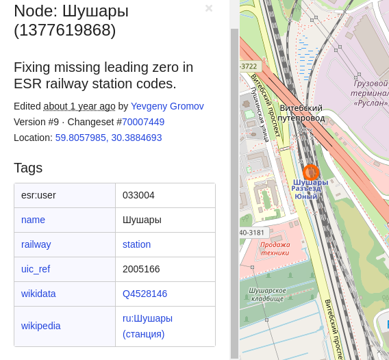

Экспортируем нужные нам данные из openStreetMap


Иногда возникает ситуация, в которой нам жизненно необходимо получить структурированные геоданные для своих проектов. Но где их искать? Делать на коленке парсер google maps?
На самом деле нет — всё куда прозаичнее. Их можно без зазрения совести скоммуниздить из прекрасного проекта openStreetMaps, попутно дополнив и исправив текущие данные в их базах.
Краткая справка для тех, кто в танке: openStreetMaps (или кратко OSM) — open source картографический проект, где каждый пользователь может чуть-чуть дорисовать карту. И по принципу "с миру по нитке" собирается свободная и бесплатная карта мира. (как с википедией, только карта)
Процесс раскулачивания геосервиса запущен

Итак, в моём конкретном случае, мне нужно получить данные по всем железнодорожным станциям России: название, её код в какой-нибудь международной классификации + координаты. У вас это могут любые другие данные, принцип получения от этого толком не изменяется.
Для вытаскивания небольших данных из OSM есть онлайновый инструмент, который позволяет делать запросы и получать результат в JSON.
Но лично для меня этот язык запросов выглядит слишком странным + этот инструмент работает до невозможности медленно (а иногда благополучно лежит). overpass-turbo
Но можно пойти куда более простым и понятным путём:
- Скачать дамп всех данных OSM (или маленький кусочек нужной нам территории)
- Отфильтровать объекты (оставить только те типы объектов, которые нам нужны)
- Преобразовать в формат, который пригоден для загрузки в БД
Небольшая вставка теории:
Чтобы придумать, как вытащить железнодорожные станции, нужно понимать, какие данные и с какой структурой там в принципе есть.
Есть очень хорошая вводная статья на хабре.
А также имеется официальная дока.
Если кратко:
Дамп данных из OpenStreetMap можно представить в виде здоровенного XML файла, который содержит в себе помойку большое скопление тэгов трёх типов:
- Точки (node)
- Линии (way)
- Отношения (relation)
Внутри этих тэгов заполняется всякая информация о них в виде key:value.
Например: Давайте попробуем найти в интерфейсе OSM любую станцию и посмотреть, что там внутри.
Станция Шушары и её информация (слева в таблице):

Теперь посмотрим, как она выглядит в данных:
<node id="1377619868" lat="59.8057985" lon="30.3884693" version="9" timestamp="2019-05-08T05:34:15Z" changeset="70007449" uid="474169" user="Yevgeny Gromov">
<tag k="esr:user" v="033004"/>
<tag k="name" v="Шушары"/>
<tag k="railway" v="station"/>
<tag k="uic_ref" v="2005166"/>
<tag k="wikidata" v="Q4528146"/>
<tag k="wikipedia" v="ru:Шушары (станция)"/>
</node>
Данные хранятся в виде
<tag k="key" v="value">
внутри нашей точки "Шушары". А координаты хранятся в атрибутах самого тега "node" (lat/lon).
Замечаем, что признак "железнодорожная станция" — это вот такой тэг. На него и будем ориентироваться, когда будем фильтровать данные:
<tag k="railway" v="station"/>
Окей, мы поняли структуру, поняли что нам надо. Но где данные, Лебовски?

Добываем данные
Если у вас достаточно свободного пространства на жестком диске — можете попробовать выкачать весь мир по официальным инструкциям.
Либо можно зайти на сайт openStreetMap, открыть на карте нужный квадрат и нажать на "Экспорт".
У России другой путь
Проблема России в том, что она достаточно большая, чтобы экспорт в интерфейсе openStreetMap падал из-за слишком большого количества данных, но всё ещё достаточно маленькая, чтобы ради неё выкачивать весь мир!
Специально для таких извращенцев, как мы, некоторые люди подготавливают "нарезку" мира на удобоваримые куски:
- На geofabrik.de имеются нарезки по континентам
- На needgeo.com есть данные по странам пост-советского пространства.
Последняя ссылка как раз нам очень пригодится! :) Выкачиваем оттуда файл RU.pbf (который весит сущие копейки — всего 3GB)
Обрабатываем данные
Для обработки нам понадобятся две консольные утилиты: osmconvert и osmfilter.
В debian/ubuntu устанавливаются очень просто одной командой:
sudo apt install osmctools
Для остальных ОС имеются ссылки на бинарники на официальной wiki Osmfilter Osmconvert.
Во-первых, нам нужно распаковать скачанный файл .pbf в пригодный для фильтрации формат.
osmconvert RU.pbf -o=RU.o5m
На выходе получим файл RU.o5m, который занимает уже 6.2GB. (но это всё ещё бинарный не человеко-читаемый файл.)
Теперь отбрасываем всё лишнее, оставляя только точки с нужным там тегом (который мы нашли в предыдущих параграфах):
osmfilter RU.o5m --keep="railway=station" > stations.osm
Компьютер задумается на какое-то время, а затем заполнит файл stations.osm. Де-факто, уже почти всё. Мы на выходе получили XML файл со всеми нужными нам станциями (3Mb).
Попробуем проверить данные: Открываем в любом текстовом редакторе, который способен открывать большие текстовые файлы (vim), и бегло просматриваем станции:
И тут натыкаемся на станцию метро "Озерки". Что ж, формально — это жд, и формально — станция. Но не совсем то, что мне нужно. :)
<node id="96459081" lat="60.0354511" lon="30.3210663" version="24" timestamp="2020-01-08T22:53:32Z" changeset="79358758" uid="217225" user="&ergio">
<tag k="colour" v="blue"/>
<tag k="layer" v="-5"/>
<tag k="name" v="Озерки"/>
<tag k="name:de" v="Oserki"/>
<tag k="name:en" v="Ozerki"/>
<tag k="name:fi" v="Ozerki"/>
<tag k="name:ru" v="Озерки"/>
<tag k="network" v="Петербургский метрополитен"/>
<tag k="operator" v="Петербургский метрополитен"/>
<tag k="public_transport" v="station"/>
<tag k="railway" v="station"/>
<tag k="station" v="subway"/>
<tag k="subway" v="yes"/>
<tag k="transport" v="subway"/>
<tag k="wikidata" v="Q2241386"/>
<tag k="wikipedia" v="ru:Озерки (станция метро)"/>
</node>
Видим там целых три тега, которые свидетельствуют о том, что это метро. (зачем такая избыточность?)
<tag k="station" v="subway"/>
<tag k="subway" v="yes"/>
<tag k="transport" v="subway"/>
Фильтруем по этим тегам:
osmfilter stations.osm --drop="station=subway or subway=yes or transport=subway" > not_subway.osm
Смотрим на выходной файл — выглядит так, словно успешно отфильтровали. Теперь осталось превратить xml файл в CSV, чтобы удобно залить в базу.
Смотрим на документацию по станциям и составляем список тегов, которые будем выводить в CSV: railway:stations
Нужные нам столбцы:
- id
- lat
- lon
- name
- uic_ref — уникальный код железнодорожной станции, присваиваемый UIC (International Union of Railways, Международный союз железных дорог).
- esr:user — уникальный код железнодорожной станции в Единой сетевой разметке (ЕСР, для станций Балтики и стран СНГ).
Экспортируем (обратите внимание, что атрибуты самого node записываются через "@"):
osmconvert not_subway.osm --all-to-nodes --csv="@id @lat @lon name uic_ref esr:user" --csv=headline > stations.csv
Теперь мы можем со спокойной совестью делать с этими данными, что душе угодно. Можем обрабатывать руками в EXCEL, можем залить в базу и использовать в своих разнообразных проектах.
Если найдете какие-то неточности в данных, очень рекомендуется исправить их не только у себя, а залить их также на саму OpenStreetMap. Так сказать, сделать свой маленький вклад в общее дело. :)
P.S. Мистическим образом, под железнодорожные станции ещё мимикрирует Волгоградский метротрам. Но его уже можно отфильтровать в итоговом CSV.